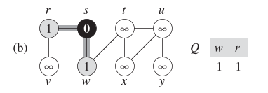

BFS (Búsqueda en Amplitud)#
¿Qué es el BFS?
El BFS o búsqueda en amplitud (anchura) es uno de los algoritmos más simples de búsqueda en grafos.
Es el prototipo de muchos otros algoritmos importantes sobre grafos.
Intuición del BFS#
Se comienza con un nodo origen y se exploran todos los vecinos de este nodo.
A continuación, para cada uno de los vecinos se exploran sus respectivos vecinos adyacentes, y así sucesivamente hasta recorrer todo el grafo.
Descripción formal#
Dado un grafo \(G = (V, E)\) y un vértice origen \(s\):
El BFS explora sistemáticamente las aristas de \(G\) para descubrir cada vértice alcanzable desde \(s\).
Calcula la distancia mínima (en cantidad de vértices) de \(s\) a cada vértice alcanzable.
Produce un árbol BF con \(s\) como raíz y todos los vértices alcanzables desde él.
Funciona tanto para grafos dirigidos como no dirigidos.
Información que proporciona el árbol BF#
Para cada vértice \(v\) alcanzable desde \(s\), el camino simple de \(s\) a \(v\) en el árbol BF corresponde al camino más corto (en número de aristas) de \(s\) a \(v\) en el grafo.
¿Por qué se llama búsqueda por anchura?
El algoritmo toma este nombre porque expande uniformemente la frontera entre los vértices descubiertos y los no descubiertos.
Descubre todos los vértices a una distancia \(k\) desde \(s\) antes de descubrir alguno a distancia \(k + 1\).
Mecanismo de progreso del BFS#
BFS colorea cada vértice de blanco, gris o negro.
Todos los vértices comienzan como blancos y cambian de color a medida que se descubren.
Color |
Significado |
|---|---|
Blanco |
No descubierto |
Gris |
Descubierto, pero con vecinos sin explorar |
Negro |
Todos sus vecinos han sido explorados |
Si \((u, v) \in E\) y \(u\) es negro, entonces \(v\) ya debe ser gris o negro.
Los vértices grises representan la frontera entre descubiertos y no descubiertos.
Construcción del árbol BF#
Inicialmente, el árbol BF solo contiene la raíz, es decir, el vértice origen \(s\).
Cuando la búsqueda descubre un vértice blanco \(v\) al explorar la lista de adyacencia de un vértice \(u\), se añaden \(v\) y la arista \((u, v)\) al árbol.
\(u\) se convierte en el padre o predecesor de \(v\).
Cada vértice tiene a lo sumo un padre, ya que se descubre una sola vez.
Las relaciones de ancestro y descendiente se definen con respecto a la raíz \(s\).
Suposiciones antes de presentar el algoritmo#
El grafo de entrada \(G = (V, E)\) se representa mediante listas de adyacencia.
A cada vértice se le asignan los siguientes atributos:
u.color: color del vérticeu.π: predecesoru.d: distancia desde el vértice origen \(s\)
Se utiliza una cola \(Q\) para manejar los vértices grises.
Pseudocódigo del BFS#
 #
#
Ejemplo visual en un grafo no dirigido#

Ejemplo paso a paso#


Complejidad temporal#
\(O(V + E)\)
Donde:
\(V\) = número de vértices
\(E\) = número de aristas
¿Qué es un árbol BF?
El BFS construye un árbol de búsqueda en amplitud (árbol BF) a medida que recorre el grafo.
Este árbol corresponde a los atributos de predecesores (\(π\)).
Sea un grafo \(G = (V, E)\) con vértice origen \(s\). Se define el subgrafo de predecesores \(G_{π}\) como:
El grafo de predecesores \(G_{π}\) es un árbol BF si \(V_{π}\) consiste en los vértices alcanzables desde \(s\), y para todo \(v \in V_{π}\), el subgrafo \(G_{π}\) contiene un único camino simple de \(s\) a \(v\) que también es el camino más corto en \(G\).